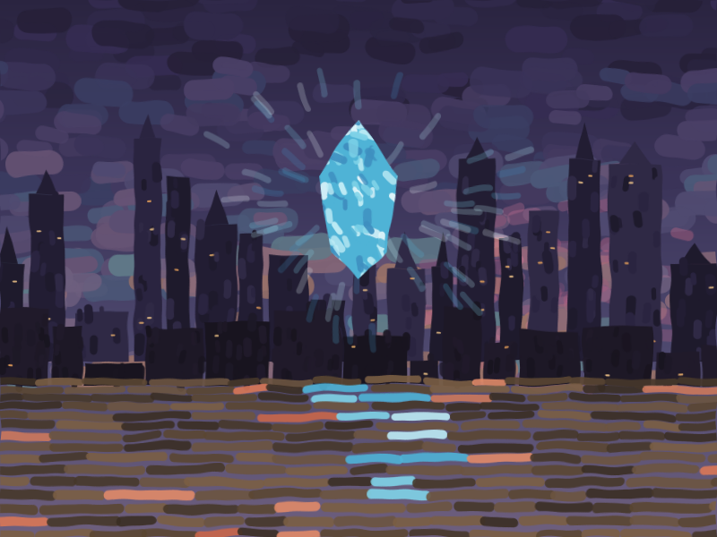
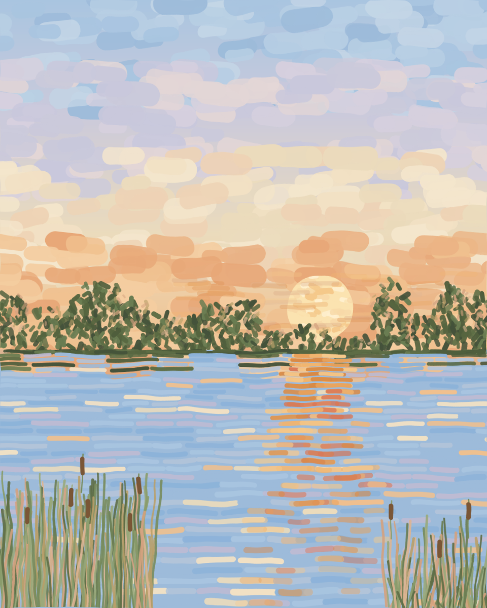
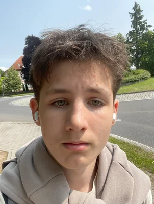
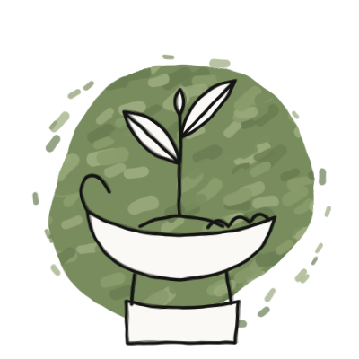
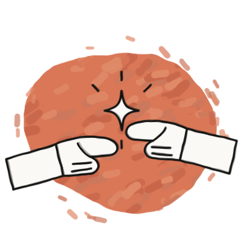
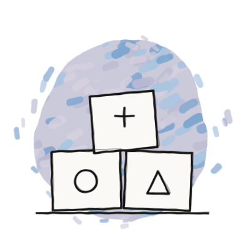
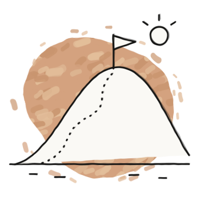
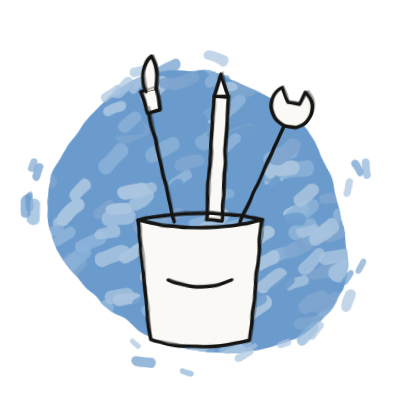
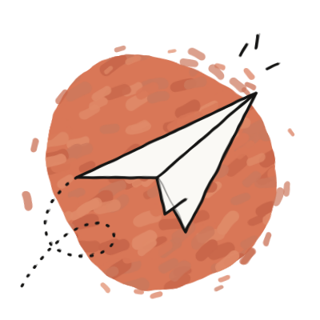

Sparks of Silt
Ve vývojiMoje vlastní hra ve stylu Arcane. Stavím ji v Unity, postavy dělám v Blenderu a hudbu k ní skládám ve vlastní Python knihovně Paprika.
Jsem Voku a tohle je moje portfolio.
Vývojář · weby · hry · AI
Mladý vývojář z jižních Čech. Stavím weby a rezervační systémy pro laser game arény, vyvíjím vlastní hru a experimentuju s AI. AI je můj nástroj, ne berlička: rozumím tomu, co dělám.
Právě stavím Sparks of Silt a systém pro Respawn ČB


01O mně

Jmenuji se Vojtěch Kurinec, ale většina mě zná jako Voku. Je mi 16 let a IT je moje vášeň. Programuju, experimentuju s AI, tisknu na 3D tiskárně, bastlím s Raspberry Pi a zajímám se o hardware. Rád hraju šachy, hry a občas i sportuju.
Věřím, že nejlepší způsob jak se naučit něco nového je prostě to postavit. Proto mám za sebou několik vlastních projektů, na kterých jsem se naučil víc než v jakékoli učebnici.
02Teď stavím
Dvě věci, kterým teď dávám nejvíc času: vlastní hra a systém pro arénu, kde to celé začalo.

Moje vlastní hra ve stylu Arcane. Stavím ji v Unity, postavy dělám v Blenderu a hudbu k ní skládám ve vlastní Python knihovně Paprika.
Web a celý systém arény v Českých Budějovicích: rezervace, turnaje a výsledky her. Běží naostro a pořád ho rozvíjím.
03Zakázky
Respawn Lasergame České Budějovice byla moje první opravdu velká práce pro klienta. Musel jsem být serióznější, komunikovat profesionálně a dotáhnout projekt od zadání přes konzultace až po předání.
Když web začal fungovat, ozvali se další. Díky Respawnu jsem získal zakázku pro další laser game arénu a pro jednu školu.

České Budějovice
Webové stránky a systém arény: rezervace, správa turnajů a výsledky her.
Domažlice
Nový web a rezervační systém laser game arény, který nahrazuje starý web na WordPressu.
Přes Respawn
Třetí zakázka, kterou jsem získal díky práci pro Respawn.
04Projekty
Vlastní projekty, na kterých se učím. Některé běží, některé jsem odložil, ze všech jsem si něco odnesl.

Python knihovna na skládání hudby bez DAW: syntéza, efekty, mix a sampler se skutečnými nástroji. Vzniká kvůli soundtracku pro Sparks of Silt.
Platforma pro učení angličtiny skrze písničky. Uživatelé vyplňují chybějící slova, překládají texty a procvičují slovní zásobu. Všechno zdarma, bez pay-to-win prvků.
Český Minecraft server s Laserforce mechanikami. Vlastní Paper plugin pro laserball, statistiky hráčů a více herních módů. Plugin je open source.
Web app pro scraping a zobrazování vlastních Laserforce statistik. Přehledný dashboard s historií her, porovnáváním výsledků a vlastní databází.
Nástupce Knowixu: platforma ve stylu Duolinga, která kombinuje výuku angličtiny přes písničky s přírodovědným obsahem rozděleným podle ročníků.
Aplikace pro potápěče: načítá a vizualizuje data z hodinek Suunto přes jejich OAuth 2.0 API.
PWA nad Bakaláři API s přehledným rozhraním pro studenty: rozvrh, známky, absence a zprávy. Projekt už dál nevyvíjím.
Můj úplně první projekt: chatovací platforma postavená na Fletu. Hodně jsem se naučil o tom, jak věci fungují (a jak ne).
Vzdělávací pokus zaměřený na pochopení vstupních zařízení. Naučil jsem se hodně o tom, jak nedělat věci. A to je taky cenná zkušenost.
05Jak pracuju

Snažím se programovat i „normálně“, ale nepoužívat AI v roce 2026 je jako odmítat kalkulačku v roce 2010. AI je pomocník: klidně ať napíše kód, ale musím tomu rozumět. Když rozjedu projekt, musím vědět co to je, dostat ho k lidem, zabezpečit ho a otestovat. A u všeho se učím pořád dokola.
Najít problém, který stojí za to vyřešit.
AI píše kód, já vedu směr, architekturu a kontroluju to.
Dostat to z localhostu k reálným uživatelům.
Ošetřit data, přihlašování a slabá místa.
Projít to, najít bugy, opravit, zopakovat.
Zpopularizovat projekt a dostat ho mezi lidi.
06Technologie
Od backendu přes hry po hardware. Nejradši mám Python a Flask, ale nebojím se sáhnout po čemkoli, co problém vyřeší.

07Kontakt

Napiš mi, každou zprávu rád přečtu.